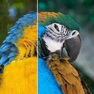

چینل ریمپ (RGB)

ہر رنگ چینل کو لیئر کے دوسرے چینل سے دوبارہ بناتا ہے، مصنوعی رنگ یا لومینینس کو الفا میں منتقل کرنے کے لیے۔
سیٹنگز
| سیٹنگ | قسم | رینج | ڈیفالٹ |
|---|---|---|---|
| R | انتخاب | سرخ, سبز, نیلا, الفا, لومینینس, صفر, مکمل | سرخ |
| G | انتخاب | سرخ, سبز, نیلا, الفا, لومینینس, صفر, مکمل | سبز |
| B | انتخاب | سرخ, سبز, نیلا, الفا, لومینینس, صفر, مکمل | نیلا |
| A | انتخاب | سرخ, سبز, نیلا, الفا, لومینینس, صفر, مکمل | الفا |